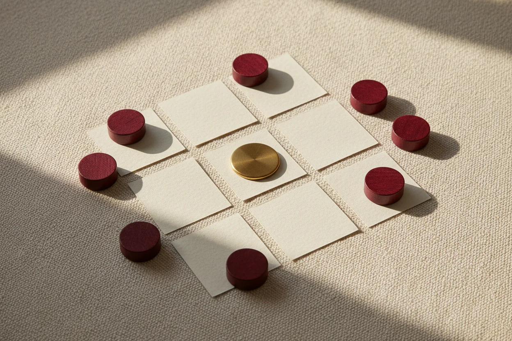
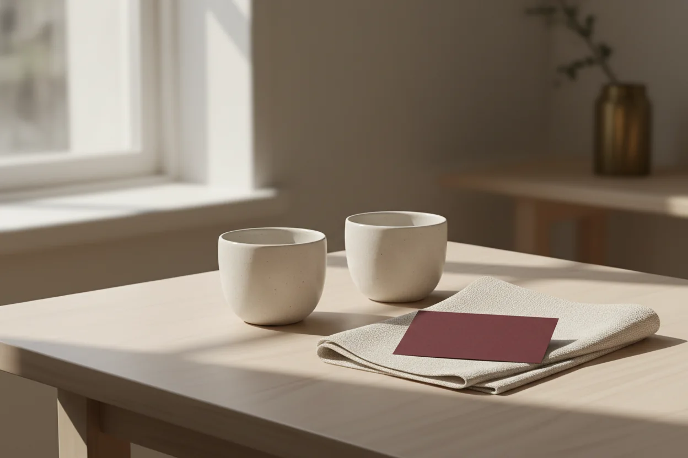

TRES PROPUESTAS · SIN REGISTRO
Tres actividades para empezar sin prisa.
Elegid lo que os apetezca hoy: un bingo de coincidencias, una pausa breve o una escena inventada. Funcionan en este navegador y no guardan respuestas.
Elegir actividad ↓
01 · SUAVE · 5–10 MIN
Bingo de afinidades
Nueve ideas sencillas para descubrir coincidencias sin convertir ninguna respuesta en una obligación.
- Leed las casillas por turnos y elegid una idea que os dé curiosidad.
- Marcadla solo si ambas personas quieren compartir algo sobre esa idea.
- Una línea propone una conversación; no hace falta completar el tablero.

02 · BIENESTAR · 2 MIN
Pausa de dos
Un pequeño espacio para bajar el ritmo y decidir qué os vendría bien ahora. Hablar, guardar silencio o terminar antes son opciones igual de válidas.
- Elegid si queréis hablar, estar en silencio o simplemente mirar alrededor.
- Iniciad el temporizador opcional de dos minutos; respirad con normalidad, sin seguir un patrón.
- Al terminar, cada persona puede compartir una palabra o dejarlo aquí.
03 · IMAGINACIÓN · 10 MIN
Fábrica de escenas
Combinad tres pistas cotidianas para inventar una escena completamente ficticia. No hace falta actuar ni contar experiencias personales.
- Generad un lugar, un tono y un objeto al azar.
- Inventad una escena breve: podéis narrarla, dibujarla en palabras o dejarla en una sola frase.
- Si una pista no encaja, cambiadla o generad otra; cualquiera puede pasar o parar.